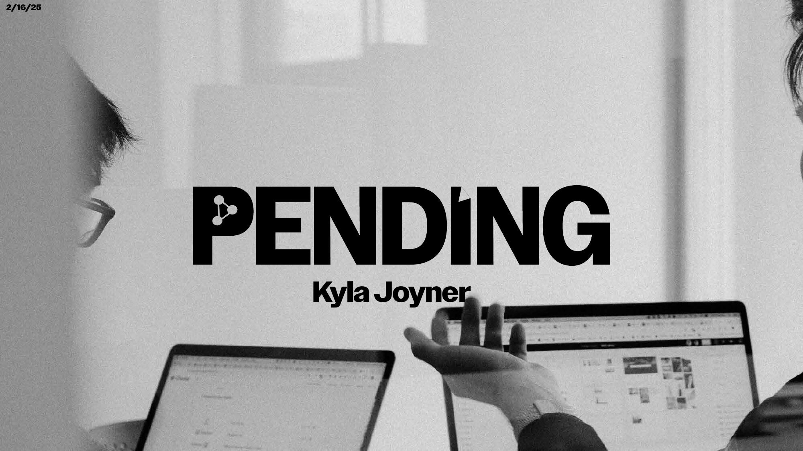
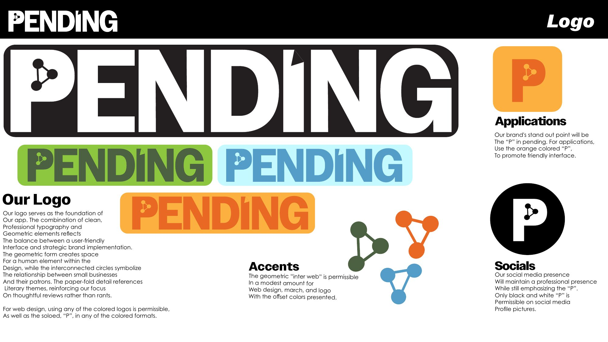
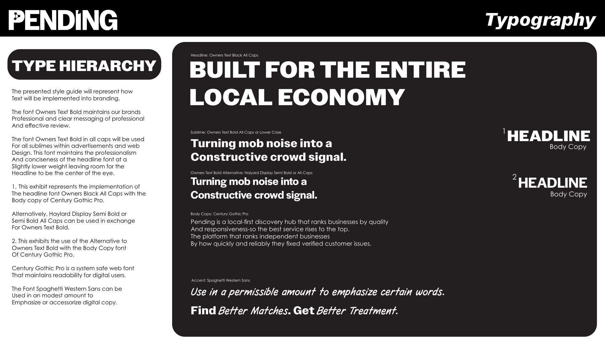
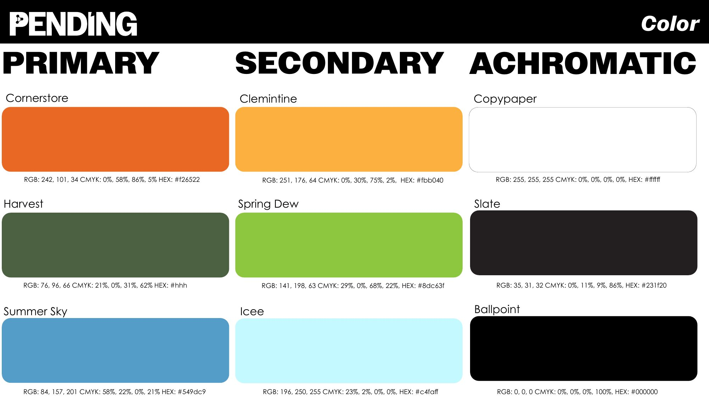

Pending
Pending is a startup company created by UNC Kenan-Flagler students, the app aims to serve as a middle ground review forum between companies and clients, where complaints and critiques are not only resolved but mutually beneficial.
Below is my concept and branding outline for the Pending Launch.



